hmlcitfaturamento.atmtec.com.br
🗄️ axa-hml-faturamento.nsseg.com.br/alfa/citnet/
🏢 Tenant AXA - HML - ALFA
👤 Perfil INTERNO (usuário IVAN)
🗓️ 27/07/2026
O CITNET novo é uma reescrita completa (front React + API própria /api/…), com seleção de tenant na tela de login (combo "Ambiente" com 17 seguradoras/ambientes) e um Tracker da migração próprio, que declara 21 de 31 telas de negócio migradas (68%) — o bloco BLK-A (Operação Nacional: averbação + cobertura + cadastro-operação) está marcado 100%.
Os dois sistemas foram abertos simultaneamente, autenticados com o mesmo usuário/perfil (INTERNO — senha em .env, não publicada), e comparados na tela Averbação RC-V com a mesma massa. Confirmou-se que ambos apontam para a mesma base (smt-hom-citweb-axa-alfa): os protocolos gerados saíram sequenciais entre os dois (36 no legado, 37 no novo) e cada averbação gravada foi conferida coluna a coluna em tb_mov_avb_rcv_cit.
Massa usada: Filial 1 — SÃO PAULO · Apólice 2 subgrupo 1 (CC VKMCML — prêmio por faixa de KM: 0–1000 = R$ 77,77 / 1001–20000 = R$ 88,88) e Apólice 101059 subgrupo 1 (CC TPP — taxa por percurso, referência conhecida R$ 1.999,98 em Osasco/SP → Itaboraí/RJ).
O núcleo da averbação RCV está em paridade: cálculo de prêmio, limites de garantia (DC/DM), competência, restrição de tipo de documento por apólice, duplicidade de conhecimento, obrigatoriedade de campos, bloqueio de data retroativa, efeito da exclusão e até o hash de autenticação do protocolo impresso são idênticos. A conferência no banco mostrou 27 de 31 colunas iguais entre a averbação criada no legado e a criada no novo com o mesmo input (as 4 diferenças são chaves sequenciais, o nº de documento que precisou ser distinto e a data/hora — ver D2).
Não está 100% idêntico ainda. Há 2 divergências de severidade alta (apólice cancelada averbável e data/hora gravada em UTC) e 6 de média/baixa. Nenhuma delas é bloqueio de fluxo, mas as duas altas afetam dado gravado — precisam de correção antes de considerar a tela homologada.
A apólice 999 (filial 1, ramo 59) está cancelada no banco (i_can_apo = 'S'). No CITNET atual ela não aparece na lista de apólices da tela de averbação RCV (6.190 opções, sem o 999). No CITNET novo ela aparece, carrega subgrupo e limites (DC R$ 280.000,00 / DM R$ 200.000,00) sem qualquer aviso, e a averbação foi gravada com sucesso — protocolo 1, prêmio R$ 4.799,95.
A API do novo chama GET /api/apolices/lookup?filial=1&ramos=59&vigencia=V&take=20000 — ou seja, pede vigência "V", mas o resultado inclui apólice cancelada. O filtro parece considerar apenas as datas de vigência, sem excluir i_can_apo = 'S'.
Averbação (e consequentemente movimento de faturamento) em apólice cancelada — risco de cobrança/cobertura indevida e de divergência contábil no fechamento.
SAO PAULO - 1 → Apólice 999 → Subgrupo 1 → CTE + documento → Data hoje → Placa ABC1234 → percurso Osasco/SP → Itaboraí/RJ → Gravar. No legado, a apólice 999 não existe na lista (conferido programaticamente nas 6.190 opções).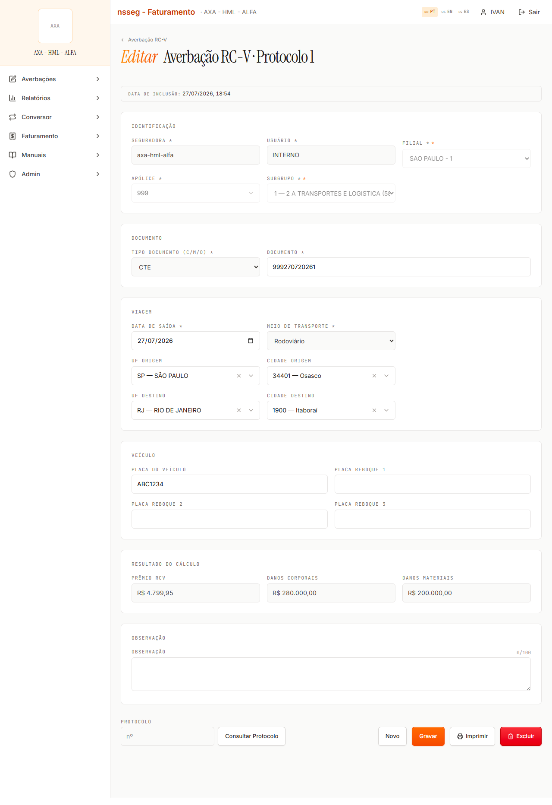
Duas averbações criadas com poucos minutos de diferença, na mesma base, gravaram d_usu_inc com 3 horas de defasagem:
| Averbação | Sistema | d_usu_inc gravado |
|---|---|---|
| apólice 2 · protocolo 36 | legado | 2026-07-27 15:34:00 |
| apólice 2 · protocolo 37 | novo | 2026-07-27 18:35:00 ← +3h |
| apólice 101059 · protocolo 2 | legado | 2026-07-27 15:43:00 |
| apólice 101059 · protocolo 1 | novo | 2026-07-27 18:42:00 ← +3h |
O próprio novo exibe "DATA DE INCLUSÃO: 27/07/2026, 18:35" na tela, e exibe corretamente 15:34 quando abre o registro criado pelo legado — ou seja, ele grava em UTC, não apenas formata.
Auditoria e ordenação incorretas; e risco de virada de dia: uma averbação feita a partir de 21:00 (BRT) grava data do dia seguinte, o que pode deslocar relatórios diários e a data de inclusão que consta no protocolo impresso entregue ao cliente.
SELECT u_pcl, d_usu_inc FROM tb_mov_avb_rcv_cit WHERE c_org_prd=1 AND u_apo_pnc IN (2,101059) na base smt-hom-citweb-axa-alfa.Para a mesma filial 1 / ramo 59: legado 6.190 apólices × novo 6.406. Diferença: 218 só no novo e 2 só no legado (777 e 7777). Amostra conferida no banco:
| Apólice | Vigência | Cancelada | Legado | Novo |
|---|---|---|---|---|
| 3 / 44 | 24/10/2025 – 24/10/2026 (vigente) | N | não lista | lista |
| 135 | 06/02/2026 – 06/02/2027 (vigente) | N | não lista | lista |
| 1001 | 11/09/2025 – 11/09/2026 (vigente) | N | não lista | lista |
| 999 | 03/09/2025 – 03/09/2026 | S (cancelada) | não lista | lista (ver D1) |
| 777 / 7777 | 01/07/2025 – 01/07/2026 (expirada) | N | lista | não lista |
Para referência, no legado o filtro interno de vigência (#vigApolice, oculto na tela) tem os valores V=Vigente / N=Não vigente / T=Todas e vem em V; com T a lista sobe para 12.380. Nenhum critério simples do banco reproduz exatamente 6.190 nem 6.406 (não canceladas = 6.357; vigentes hoje = 6.397; vigentes e não canceladas = 6.315; com CC RCV = 4.634).
Qual é a regra oficial de elegibilidade de apólice na averbação RCV pelo portal (vigência, cancelamento, existência de CC, origem da averbação). Sem isso não é possível dizer qual dos dois está certo — só que estão diferentes.
No legado, ao informar o município a tela chama POST /AverbacaoNacional/CalcularPremio e preenche o campo Prêmio na hora (evidência: R$ 1.999,98 visível antes de gravar). No novo, com os mesmos dados, nenhuma chamada de cálculo é feita (só /api/municipios/info) e o campo permanece R$ 0,00; o valor correto só aparece depois do Gravar (R$ 1.999,98 — mesmo valor, ver paridade abaixo).
Consequência prática observada na apólice 2 (CC VKMCML, por faixa de KM): o legado exibe o modal "ATENÇÃO! Erro ao calcular o prêmio de RCV: Não foi possível obter a quilometragem da viagem. Verifique os municípios e tente novamente.". O novo não exibe aviso algum e grava a averbação com prêmio R$ 0,00 e km 0 silenciosamente (confirmado no banco: u_km_vgm=0, v_cml_pmo=0 nos dois sistemas).
O usuário grava sem ver o prêmio; e uma falha de integração de quilometragem passa a ser invisível, gerando averbação com prêmio zero sem que ninguém perceba. No legado a falha é gritante.
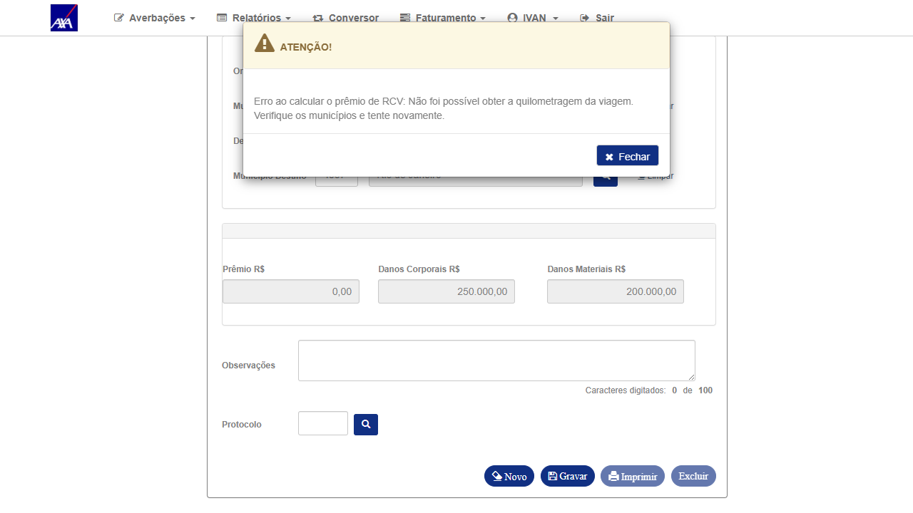
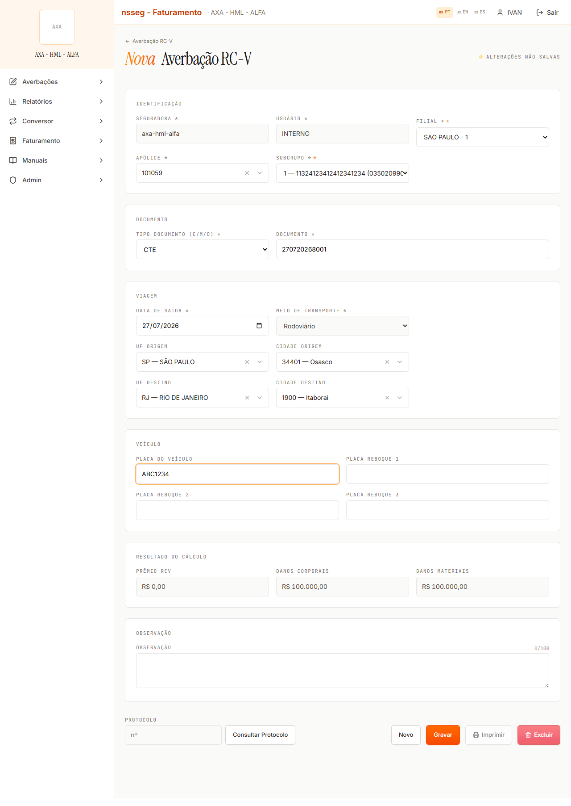
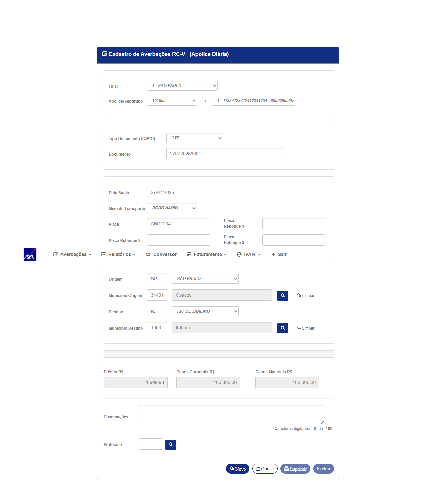
Mesma averbação (protocolo 36) impressa nos dois sistemas. Dados de negócio e o hash de autenticação são idênticos (8121607811082881042180312576472990). O que falta no novo:
27/07/2026 15:58:12)O novo também renderiza a impressão dentro do app (com menu lateral), enquanto o legado abre uma página limpa própria para impressão.
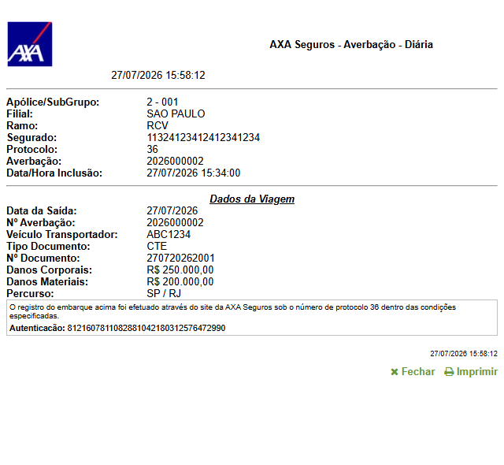
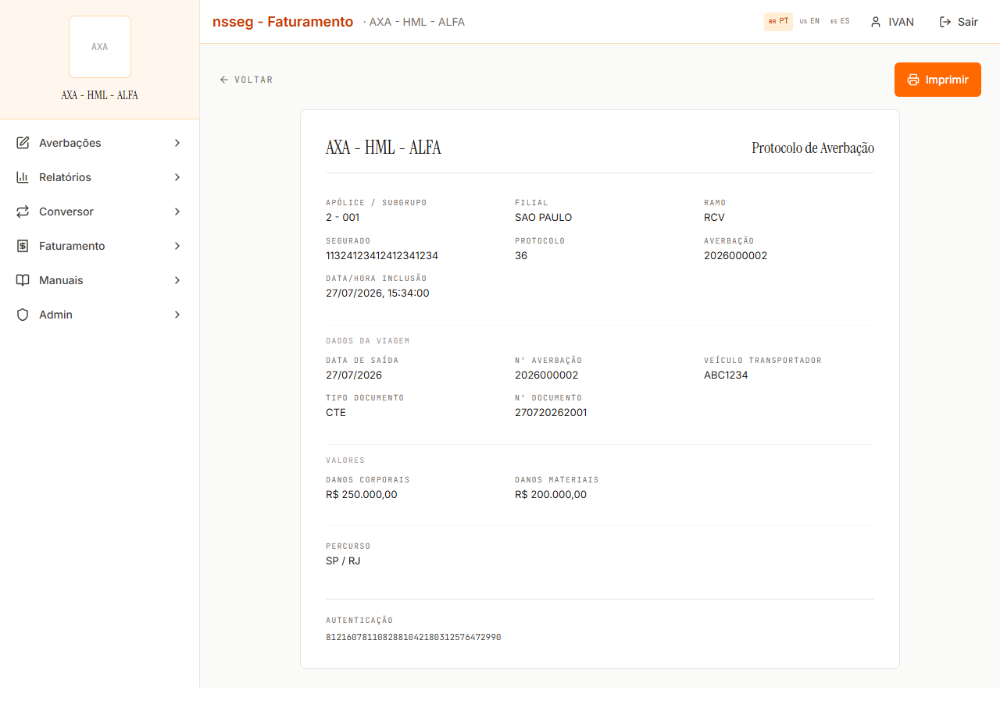
O novo oferece três filiais que o legado não lista na tela de averbação RCV: MATRIZ - 2, TESTE MANUAL - 1408 e FILIAL TESTE - 9999. Também muda o formato do rótulo: legado 1 - SAO PAULO (código – nome, ordenado por código) × novo SAO PAULO - 1 (nome – código, ordenado por nome).
Precisa confirmar se a lista do legado é filtrada por algum critério (filial ativa / com apólice do ramo / vínculo do usuário) que o novo não aplica — mesma família do D3.
Legado: #n_ori (origem) tem 32 opções e não inclui UB — URBANO; #n_dst (destino) tem 33 e inclui. No novo, as duas listas têm 33 opções — ou seja, é possível escolher "URBANO" como origem, o que o legado não permite. As demais opções especiais são idênticas nos dois (ZZ A COMUNICAR, BC back to back, BR BRAZIL, CU CUMBICA (AEROPORTO), FN FERNANDO DE NORONHA).
| # | Item | CITNET atual | CITNET novo |
|---|---|---|---|
| 1 | Mensagens de validação | Agregadas num único modal (8 mensagens de uma vez ao gravar vazio) | Uma por vez, em cascata (ex.: primeiro "Informar o Estado de Origem.", depois placa, depois...) |
| 2 | Estado inicial do formulário | Travado até clicar Novo; Gravar desabilitado | Já liberado; Gravar habilitado de saída |
| 3 | Data de Saída | Vazia; dd/mm/aaaa com datepicker | Pré-preenchida com a data de hoje; input nativo type=date (formato ISO) |
| 4 | Tipo Documento / Meio de Transporte | Iniciam em Selecione... (exigem escolha) | Sem placeholder — já vêm CTE e Rodoviário (transporte desabilitado) |
| 5 | Placa do Veículo | Obrigatória (mensagem "Informe a Placa") | Obrigatória também ("Informar a Identificação da Placa do Veículo."), mas o rótulo não tem asterisco |
| 6 | 4º botão após gravar | Cancelar → "Confirma Cancelamento?" (Sim/Não) → "Cancelamento efetuada com sucesso!" | Excluir → "Tem certeza que deseja excluir o protocolo N?" (Cancelar/Confirmar). Efeito no banco é o mesmo (registro removido) |
| 7 | Consulta sem apólice selecionada | Busca por modal (Protocolo / Placa / Período / CT-e) | Tela de filtros própria; clicar Consultar sem apólice é no-op silencioso (nenhuma requisição, nenhuma mensagem). Sem resultados, também não exibe "nenhum registro encontrado" |
Também vale registrar como ganho do novo: seção Identificação exibindo Seguradora/tenant e Usuário, busca de apólice com filtro por número/segurado, combo de município com nome (o legado exige código de 5 dígitos ou abrir o modal de pesquisa), e uma tela de consulta de protocolos com grade paginada (Protocolo / Saída / Doc / Placa / UF / IS / Prêmio / Situação) que o legado não tem.
| Item verificado | Resultado |
|---|---|
| Cálculo de prêmio — CC TPP (apólice 101059, Osasco/SP → Itaboraí/RJ) | Idêntico: taxa f_cml_bsc = 0,99999 e prêmio R$ 1.999,98 nos dois; gravado igual no banco |
| Limites de garantia (Danos Corporais / Materiais) por apólice | Idênticos: 250.000/200.000 (apólice 2) e 100.000/100.000 (apólice 101059) |
| Subgrupos da apólice | Mesma lista e mesmos CNPJs (só muda a formatação: 1 - nome - cnpj × 1 — nome (cnpj)) |
| Tipo de Documento restrito pela apólice | Nos dois, após escolher a apólice 2, "Nota Fiscal Eletrônica" é removida (apólice sem NFe habilitada) — restam CTE e Outros |
Persistência em tb_mov_avb_rcv_cit | 27 de 31 colunas idênticas (ramo, filial, subgrupo, tipo doc, data saída, competência 202607, UFs, municípios, placa, km, tarifas, prêmio, limites, usuário). Divergem só as chaves (u_avb, u_pcl), o documento usado e d_usu_inc (ver D2) |
| Duplicidade de conhecimento | Bloqueia nos dois com a mesma mensagem: "Conhecimento já cadastrado para outra Averbação" |
| Obrigatoriedade de campos (documento, data, placa, UF/município origem e destino) | Bloqueia nos dois (muda só o formato da mensagem — ver D8) |
| Data de saída retroativa (01/06/2026, dentro da vigência) | Bloqueia nos dois: "Data de saída deve ser igual ou maior que data atual" |
| Data fora da vigência (01/01/2020) | Bloqueia nos dois — o novo detalha melhor: "Data de movimento (2020-01-01) fora da vigência da apólice (2025-12-02 a 2026-12-02)" |
| Municípios | Mesmos códigos internos (50308 São Paulo, 34401 Osasco, 1900 Itaboraí); 647 municípios em SP e 92 em RJ |
| Limites de tamanho de campo | Documento 44, Placa e reboques 7, Observação 100, Protocolo 9 — iguais |
| Exclusão/cancelamento da averbação | Mesmo efeito no banco: o movimento é removido de tb_mov_avb_rcv_cit |
| Interoperabilidade | A consulta do novo encontra e abre a averbação criada pelo legado (protocolo 36), com todos os dados corretos |
| Hash de autenticação do protocolo impresso | Idêntico nos dois para o mesmo protocolo |
Aceite do Cliente (VerificarCobertura(), com variantes Swiss Re e Akad) que fica oculto conforme flags da apólice. Não existe equivalente visível no novo — precisa massa com a flag ligada para comparar.i_avb_nfe='S'), subgrupo automático./api/auth/me/telas-liberadas; comparar o que cada perfil vê e faz./api/…, IDOR em rcv/detalhe?filial=&apolice=&protocolo=, exclusão de registro de outro tenant, sessão/expiração).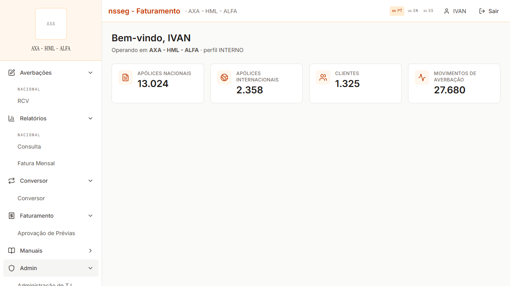
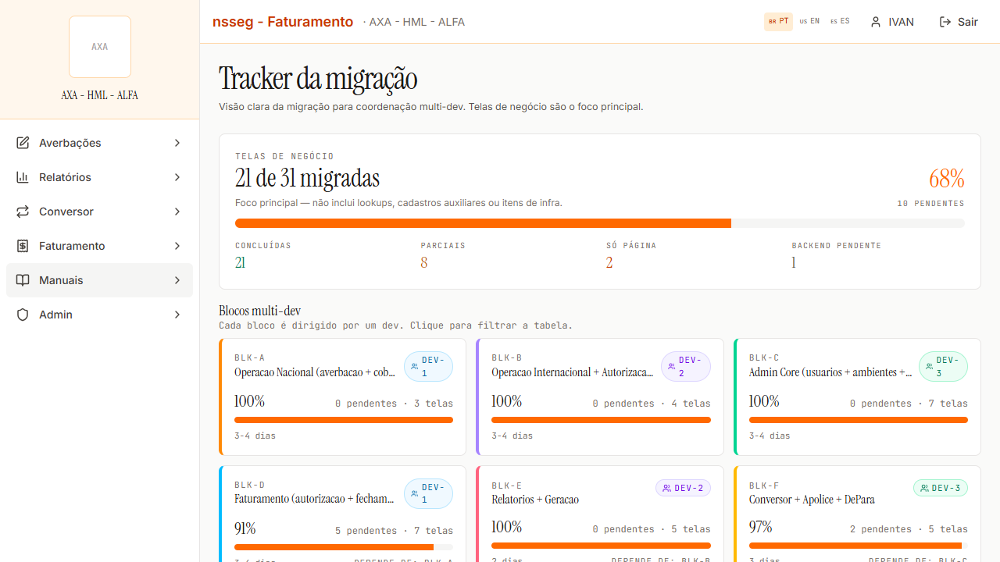
| Campo | CITNET atual (id) | CITNET novo (id) | Status |
|---|---|---|---|
| Filial | c_org_prd (34 opções) | select (36 opções) | D6 |
| Apólice | u_apo_pnc (6.190) | combo com busca (6.406) | D3 |
| Subgrupo | u_sgp | select | igual |
| Tipo Documento (C/M/O) | e_doc_ebq — Selecione/CTE/NFe*/Outros | docEmbarque — CTE/Outros | igual* |
| Documento | c_id_vgm maxlength 44 | idViagem maxlength 44 | igual |
| Data de Saída | d_sda_vgm texto + datepicker, vazia | dataSaidaViagem type=date, hoje | D8.3 |
| Meio de Transporte | e_tr Selecione/RODOVIÁRIO | meioTransporte Rodoviário (desabilitado) | D8.4 |
| Placa + 3 reboques | t_vei_tpr, t_plc_rbq_1..3 (7) | tipoVeiculo, placaReboque1..3 (7) | igual |
| UF / Município Origem | s_uf_ori+n_ori (32) / c_cdd_ori+modal | combo UF (33) / combo município | D7 |
| UF / Município Destino | s_uf_dst+n_dst (33) / c_cdd_dst+modal | combo UF (33) / combo município | igual |
| Prêmio / Danos Corporais / Materiais | v_cml_pmo/v_dc/v_dm (desabilitados) | premioRcv/danosCorporais/danosMateriais (readonly) | D4 |
| Observação | n_jus_alt maxlength 100 | observacao maxlength 100 | igual |
| Protocolo + consulta | u_pcl (9) + modal de pesquisa | protocoloBusca (9) + Consultar Protocolo | igual |
| Aceite do Cliente (cobertura) | btAceitacao → VerificarCobertura() | não encontrado | a validar |
| Seguradora / Usuário | — | idSeguradora, codUsuario (readonly) | novo (ganho) |
* "Nota Fiscal Eletrônica" existe no legado apenas até a apólice ser escolhida — para a apólice 2 ela é removida nos dois sistemas (flag hdAvbNfe vazia). Portanto não é divergência.
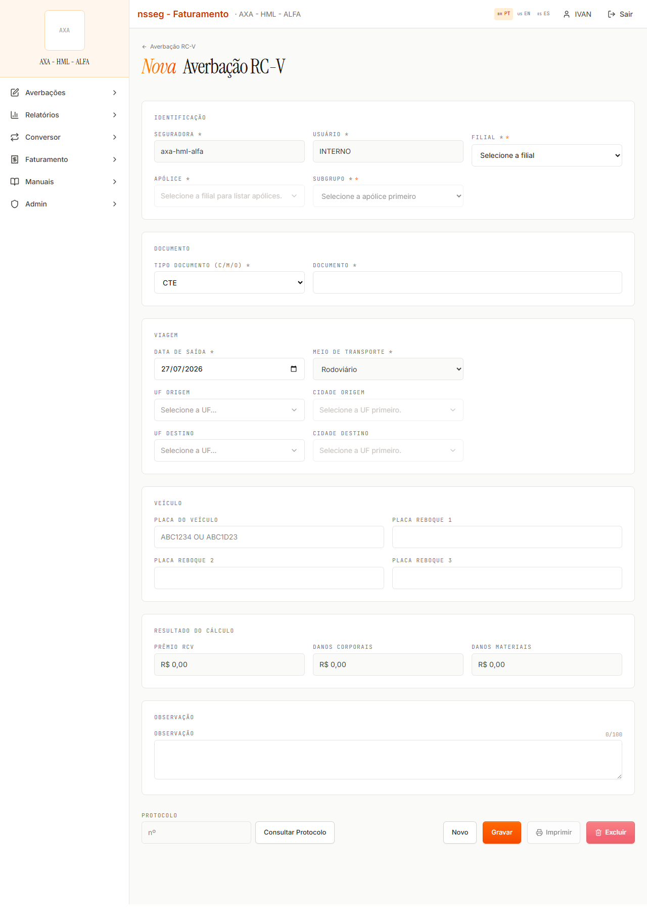
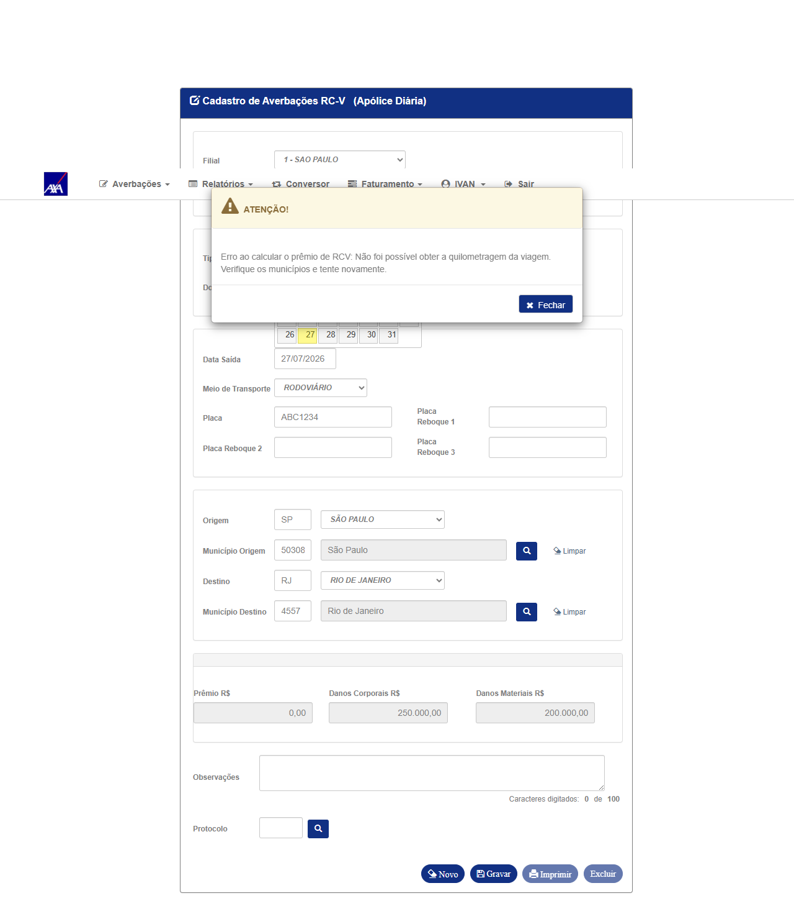
101059, subgrupo 1, filial 1, CC tipo TPP vigente 02/12/2025–02/12/2026.ABC1234.34401 — Osasco; Destino RJ / município 1900 — Itaboraí.f_cml_bsc = 0,99999 e v_cml_pmo = 1999,98 nas duas linhas · limites 100.000/100.000 · competência 202607 — idênticos. Cálculo em paridade (momento de exibição divergente → D4).2, subgrupo 1, CC VKMCML (0–1000 km = R$ 77,77 · 1001–20000 km = R$ 88,88).50308) → Rio de Janeiro/RJ (4557).u_km_vgm = 0 e v_cml_pmo = 0 → o dado gravado é igual, mas o novo esconde a falha (D4). A integração de KM em si está falhando no HML nos dois — item para o time de dev.u_avb/u_pcl (sequenciais, esperado), c_id_vgm (documento distinto por construção) e d_usu_inc → +3h no novo (UTC) — D2.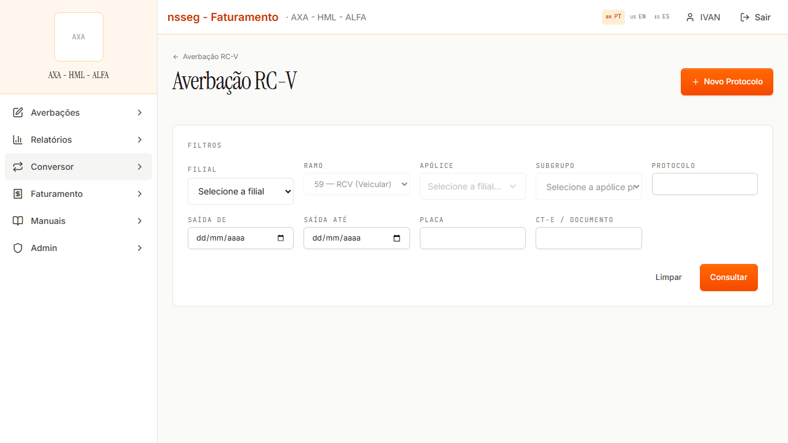
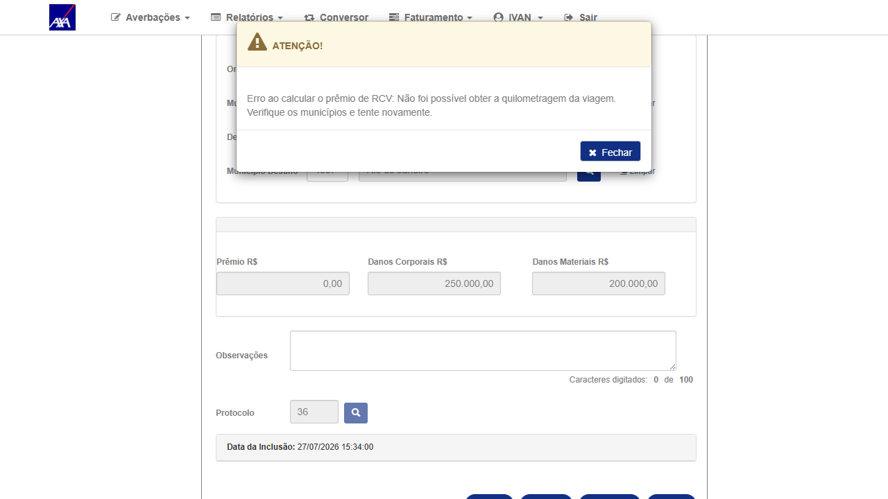
d_usu_inc em horário local, como o legado).Ambientes: novo https://hmlcitfaturamento.atmtec.com.br/login (tenant "AXA - HML - ALFA") · atual https://axa-hml-faturamento.nsseg.com.br/alfa/citnet/. Usuário INTERNO nos dois (credencial em .env, não publicada aqui).
Base de dados (comum aos dois): smt-hom-citweb-axa-alfa · tabelas tb_mov_avb_rcv_cit, tb_apo_nac_cit, tb_sgp_rcv_cml_cit.
Massa criada nesta rodada (HML): apólice 2/sgp 1 → protocolos 36 (atual) e 37 (novo); apólice 101059/sgp 1 → protocolos 2 (atual) e 1 (novo). A averbação de teste na apólice cancelada 999 foi excluída após a evidência; o protocolo 2 da 101059 foi usado para testar o "Cancelar" do legado e removido.